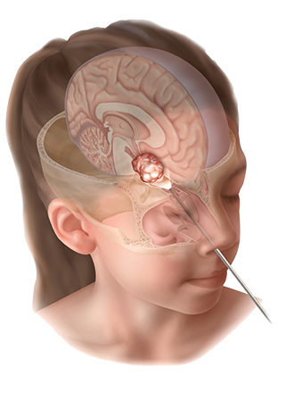

Craniopharyngioma

SYMPTOMS:
Symptoms of craniopharyngiomas vary depending on the tumor’s location. You may have:
- Hormonal problems, which can cause excessive thirst and urination if the tumor affects the pituitary gland.
-
Vision problems if the tumor presses on an optic nerve.
-
Headache, nausea or vomiting if the tumor puts pressure on the brain.
Craniopharyngiomas can also lead to complications, including:
- Problems controlling body temperature
-
Personality changes
-
Confusion
-
Weight changes
DIAGNOSIS
- Exam: To diagnose a craniopharyngioma, we do a physical and neurologic exam, and ask about your symptoms.
Blood tests: These tests measure hormone levels in your blood. High or low levels of hormones may indicate a tumor is pressing on your pituitary gland.
Imaging: An MRI scan can show the presence, size and location of a tumor.
TREATMENT
- Surgery,
Our highly skilled neurosurgeons perform more than 100 pituitary and skull base tumor surgeries every year. This large number gives us a high level of expertise.
-
Radiation therapy,
In about half of patients with craniopharyngiomas, we can remove the entire tumor with surgery. For others, the tumor is difficult to fully remove because it’s growing on or near essential nerves and blood vessels.
-
Follow-up care,
Patients with craniopharyngiomas need ongoing follow-up care because these tumors tend to return, even after surgery. The tumor often returns in the same place. Because of this risk, we monitor you at set schedules after surgery.